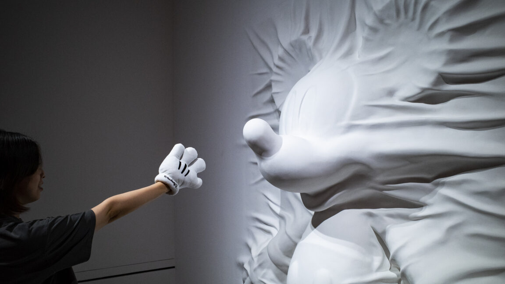
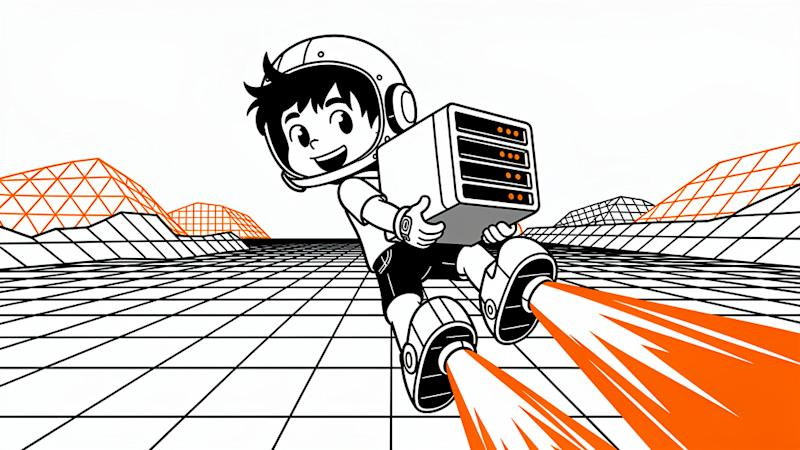

AI DAILY
AI 行业日报
2026年3月26日 · 精选 10 条
01战略转向
OpenAI关停Sora，迪士尼10亿美元合作告吹

Sora死了。OpenAI周二宣布关停Sora视频生成App及API，上线仅15个月。公司将资源转向企业生产力和编码工具，为IPO做准备
连带影响最大的是迪士尼。去年12月刚签下的10亿美元三年授权协议直接作废，据Axios报道双方一分钱都没交割。Reuters引述知情人称迪士尼"完全被蒙在鼓里"，OpenAI周一还在更新Sora安全标准
INSIGHT
做AI视频的朋友跟我说，Sora关停不意外，意外的是迪士尼那10亿。一个刚拿到最大IP授权的产品说砍就砍，只能说明一件事：OpenAI内部算过账，Sora的推理成本撑不起社交feed的用量。视频生成赛道现在剩下的玩家，得重新想想商业模型了
02AI商业化
快手可灵AI：年化收入破3亿美元，今年目标翻倍
3亿美元，12个月。快手CEO程一笑在财报会上确认，可灵AI年化收入已突破3亿美元大关，月活用户超过1200万
更值得看的是增速曲线。2025年初可灵的全年目标只有6000万美元，实际完成1.4亿美元——超额完成133%。程一笑称2026年收入有望再翻倍，资本开支同比增加110亿元用于算力扩建
INSIGHT
国内AI产品里，可灵可能是第一个用"超额完成"而不是"亏损收窄"来讲故事的。做视频工具的团队可以盯一个数：月活1200万对应3亿美元ARR，ARPU约25美元/年。这个数字说明付费渗透率还很早期，但增速够猛
03芯片
Arm首次自研芯片发布，Meta拿到第一批样品
"我们现在进入了一个新业务，我们在供应CPU"——Arm CEO Rene Haas举着一颗芯片对现场观众说。这家全球最大的芯片IP授权商，第一次自己造芯片了
新芯片叫Arm AGI CPU，台积电3nm工艺制造，主打数据中心AI Agent场景。首批客户名单很扎眼：Meta已拿到样品，OpenAI、Cerebras、Cloudflare、SAP以及韩国SK电讯和Rebellions都签了采购意向。量产预计今年下半年
INSIGHT
Arm这步棋胆子不小。靠授权费吃饭40年的公司突然下场做芯片，等于跟自己的客户抢生意。但Haas赌的是AI Agent推理需求太大，光卖IP不够吃。Meta基础设施负责人上台站台说了句大实话：我们需要更多硅片，尤其在乎能效比
04AI政策
特朗普任命黄仁勋、扎克伯格等四人为科技顾问
白宫科技顾问委员会（PCAST）首批四位成员出炉：黄仁勋（Nvidia）、扎克伯格（Meta）、Larry Ellison（Oracle）、Sergey Brin（Google联合创始人）
委员会由AI与加密货币沙皇David Sacks和白宫技术顾问Michael Kratsios共同主持，初始13个席位最多可扩至24个。职责涵盖AI政策、经济、教育、国土安全。特朗普第一任期也有类似委员会，但没放这么多科技CEO进去
INSIGHT
四个人的共同点：都参加了特朗普2025年就职典礼，都跟现政府有交易往来。Ellison的Oracle是TikTok剥离交易的底座，Meta正被儿童安全诉讼缠身。让他们来制定AI监管政策，做Agent的创业者至少知道一件事——短期内不会有严格管制
05基础设施
云计算行业破例涨价：阿里云最高涨34%，百度腾讯跟进
近20年只降不升的云计算行业破例了。3月18日，阿里云宣布AI算力和存储产品涨价，平头哥真武810E等计算卡涨幅5%-34%，CPFS智算存储涨30%，4月18日生效
同一天百度智能云跟进，AI算力涨5%-30%，并行文件存储涨30%。更早之前腾讯云已调价，部分模型定价策略涨幅高达463%。网宿科技CDN涨35%-40%，UCloud对所有新客和续约涨价
INSIGHT
做AI应用的团队注意了——过去两年"模型降价90%"的故事讲完了。阿里云给的理由很直白：Token调用量暴涨，稀缺算力要往Token业务倾斜。翻译一下就是，推理需求已经大到挤占常规云资源了。预算模型该更新了
06Agent
Claude学会操作Mac：Anthropic推出最激进的桌面Agent
Claude学会点鼠标了。Anthropic周一发布Mac桌面Agent功能，Claude可以直接点击按钮、打开应用、在输入框打字、切换软件——用户离开座位，回来活干完了
技术实现分三层优先级：先走API直连（Gmail、Slack、日历），再走Chrome扩展，最后才截屏操控桌面。Anthropic文档写得很直白："通过Slack连接拉消息只要几秒，屏幕操作慢得多还容易出错。"Pro用户（$17/月）和Max用户（$100-200/月）可用，暂限macOS
INSIGHT
做过RPA的人看到这个应该会笑。三层fallback的设计说明Anthropic很清楚屏幕操控不靠谱，但不得不做——因为总有App没有API。Reuters周日报道OpenAI正在拉私募基金抢企业Agent市场，Anthropic这次抢跑，赌的是谁先到桌面谁先拿数据
07产业信号
DeepSeek急招Agent方向，17个岗位剑指Claude Code
3月24日，DeepSeek官网挂出一批Agent方向岗位：Agent深度学习算法研究员、Agent数据评估专家、Agent基础设施工程师，总计17个新增职位
Bloomberg报道称，这批岗位标志着DeepSeek从大语言模型向Agent的战略转型。招聘要求重点提到强化学习技术，并明确以Anthropic的Claude Code和Cursor作为超越基准
INSIGHT
把竞品写进JD的公司不多。DeepSeek这么做等于公开告诉市场：我们下一步打Agent，而且知道对手是谁。国内做AI编程工具的团队，未来半年大概率要面对一个新的强力搅局者
08融资
Kleiner Perkins募资35亿美元，5个合伙人All-in AI

35亿美元，5个合伙人。硅谷老牌VC Kleiner Perkins宣布完成新一轮募资，其中10亿美元投早期、25亿美元投成长期，比上一轮翻了近一倍
底气来自手上的筹码：早期押中了Together AI、Harvey、OpenEvidence，还持有Anthropic和SpaceX股份——两家今年都有IPO预期。Figma去年上市兑现了大额回报。不过团队也在变：Ev Randle跳去了Benchmark，Annie Case转为顾问
INSIGHT
同一周Thrive Capital拿了100亿美元，Founders Fund关了60亿美元成长基金。VC行业正在出现一个新现象：钱越来越集中在头部几家，而且几乎全押AI。对创业者来说好消息是钱多了，坏消息是估值锚点也高了
09Agent基础设施
Cloudflare发布Dynamic Workers：Agent代码执行快100倍

"容器太重了"——Cloudflare的判断很直接。公司发布Dynamic Workers开放测试版，一套基于V8 isolate的轻量沙箱系统，启动时间毫秒级，内存占用只有几MB
对比传统Linux容器，Dynamic Workers启动快约100倍，内存效率提升10-100倍。Cloudflare同时推出"Code Mode"：把MCP服务器转成TypeScript API，Token消耗可降低81%
INSIGHT
做Agent的开发者都碰过这个痛点：模型生成一段代码，需要一个安全环境跑一下。容器要几百毫秒起步，isolate几毫秒。当每个用户都有Agent在不停写代码执行代码，运行时的成本和速度就变成了跟模型一样重要的事
10AI监管
Sanders提案暂停美国数据中心建设
当地时间周二晚，美国参议员Bernie Sanders提出法案，要求对AI数据中心建设实施全国性暂停令，直到国会通过保障公众利益的AI立法。众议员AOC将在未来几周提出众议院版本
法案细节比预想的激进：暂停对象是能源负载超过20兆瓦的AI数据中心，不设截止日期，并禁止向没有类似法律的国家出口芯片等算力硬件。Pew最新民调显示近40%美国人认为数据中心对环境和电费有负面影响
INSIGHT
法案大概率不会通过——特朗普政府刚任命了四位科技CEO当顾问。但Sanders选的时机很准：弗吉尼亚州选举已经因为数据中心电费问题翻盘过一次。对在美国建算力的中国公司来说，这类法案即使不通过，也会拉高地方审批的不确定性
由 Zayen知览 整理 · 构建者视角